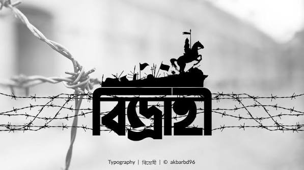

বিদ্রোহী
--কাজী নজরুল ইসলাম।
বল বীর-
বল উন্নত মম শির!
শির নেহারী’ আমারি নতশির ওই শিখর হিমাদ্রীর!
বল বীর-
বল মহাবিশ্বের মহাকাশ ফাড়ি’
চন্দ্র সূর্য্য গ্রহ তারা ছাড়ি’
ভূলোক দ্যূলোক গোলোক ভেদিয়া
খোদার আসন ‘আরশ’ ছেদিয়া,
উঠিয়াছি চির-বিস্ময় আমি বিশ্ববিধাতৃর!
মম ললাটে রুদ্র ভগবান জ্বলে রাজ-রাজটীকা দীপ্ত জয়শ্রীর!
বল বীর-
আমি চির-উন্নত শির! আমি চিরদুর্দম, দূর্বিনীত, নৃশংস,
মহাপ্রলয়ের আমি নটরাজ, আমি সাইক্লোন, আমি ধ্বংস!
আমি মহাভয়, আমি অভিশাপ পৃথ্বীর,
আমি দূর্বার,
আমি ভেঙে করি সব চুরমার!
আমি অনিয়ম উচ্ছৃঙ্খল,
আমি দ’লে যাই যত বন্ধন, যত নিয়ম কানুন শৃঙ্খল!
আমি মানি না কো কোন আইন,
আমি ভরা-তরী করি ভরা-ডুবি, আমি টর্পেডো, আমি ভীম ভাসমান মাইন!
আমি ধূর্জটী, আমি এলোকেশে ঝড় অকাল-বৈশাখীর
আমি বিদ্রোহী, আমি বিদ্রোহী-সুত বিশ্ব-বিধাতৃর!
বল বীর-
চির-উন্নত মম শির! আমি ঝঞ্ঝা, আমি ঘূর্ণি,
আমি পথ-সম্মুখে যাহা পাই যাই চূর্ণি’।
আমি নৃত্য-পাগল ছন্দ,
আমি আপনার তালে নেচে যাই, আমি মুক্ত জীবনানন্দ।
আমি হাম্বীর, আমি ছায়ানট, আমি হিন্দোল,
আমি চল-চঞ্চল, ঠমকি’ ছমকি’
পথে যেতে যেতে চকিতে চমকি’
ফিং দিয়া দেই তিন দোল্;
আমি চপোলা-চপোল হিন্দোল।
আমি তাই করি ভাই যখন চাহে এ মন যা’,
করি শত্রুর সাথে গলাগলি, ধরি মৃত্যুর সাথে পাঞ্জা,
আমি উন্মাদ, আমি ঝঞ্ঝা!
আমি মহামারী, আমি ভীতি এ ধরীত্রির;
আমি শাসন-ত্রাসন, সংহার আমি উষ্ণ চির অধীর।
বল বীর-
আমি চির-উন্নত শির! আমি চির-দূরন্ত দুর্মদ
আমি দূর্দম মম প্রাণের পেয়ালা হর্দম্ হ্যায় হর্দম্ ভরপুর্ মদ। আমি হোম-শিখা, আমি
সাগ্নিক জমদগ্নি,
আমি যজ্ঞ, আমি পুরোহিত, আমি অগ্নি।
আমি সৃষ্টি, আমি ধ্বংস, আমি লোকালয়, আমি শ্মশান,
আমি অবসান, নিশাবসান। আমি ঈন্দ্রাণী-সুত হাতে চাঁদ ভালে সূর্য
মম এক হাতে বাঁকা বাঁশের বাঁশরী আর হাতে রণ তূর্য; আমি কৃষ্ণ-কন্ঠ, মন্থন-বিষ পিয়া
ব্যথা বারিধির।
আমি ব্যোমকেশ, ধরি বন্ধন-হারা ধারা গঙ্গোত্রীর।
বল বীর-
চির-উন্নত মম শির! আমি সন্ন্যাসী, সুর সৈনিক,
আমি যুবরাজ, মম রাজবেশ ম্লান গৈরিক।
আমি বেদুইন, আমি চেঙ্গিস,
আমি আপনারে ছাড়া করি না কাহারে কূর্ণিশ।
আমি বজ্র, আমি ঈষাণ-বিষানে ওঙ্কার,
আমি ইস্রাফিলের শৃঙ্গার মহা-হুঙ্কার,
আমি পিনাক-পাণির ডমরু ত্রিশুল, ধর্মরাজের দন্ড,
আমি চক্র-মহাশঙ্খ, আমি প্রণব-নাদ প্রচন্ড!
আমি ক্ষ্যাপা দুর্বাসা, বিশ্বামিত্র-শিষ্য,
আমি দাবানল-দাহ, দহন করিব বিশ্ব।
আমি প্রাণ-খোলা হাসি উল্লাস, -আমি সৃষ্টি-বৈরী মহাত্রাস
আমি মহাপ্রলয়ের দ্বাদশ রবির রাহু-গ্রাস!
আমি কভু প্রশান্ত, -কভু অশান্ত দারুণ স্বেচ্ছাচারী,
আমি অরুণ খুনের তরুণ, আমি বিধির দর্পহারী!
আমি প্রভঞ্জনের উচ্ছাস, আমি বারিধির মহাকল্লোল,
আমি উজ্জ্বল, আমি প্রোজ্জ্বল,
আমি উচ্ছল জল-ছল-ছল, চল ঊর্মির হিন্দোল-দোল!- আমি বন্ধনহারা কুমারীর বেনী,
তন্বী নয়নে বহ্নি,
আমি ষোড়শীর হৃদি-সরসিজ প্রেম উদ্দাম, আমি ধন্যি! আমি উন্মন, মন-উদাসীর,
আমি বিধবার বুকে ক্রন্দন-শ্বাস, হা-হুতাশ আমি হুতাশীর।
আমি বঞ্চিত ব্যথা পথবাসী চির গৃহহারা যত পথিকের,
আমি অবমানিতের মরম-বেদনা, বিষ-জ্বালা, প্রিয় লাঞ্ছিত বুকে গতি ফের
আমি অভিমানী চির ক্ষূব্ধ হিয়ার কাতরতা, ব্যাথা সূনিবিড়,
চিত চুম্বন-চোর-কম্পন আমি থর থর থর প্রথম পরশ কুমারীর!
আমি গোপন-প্রিয়ার চকিত চাহনি, ছল ক’রে দেখা অনুখন,
আমি চপল মেয়ের ভালোবাসা, তাঁর কাঁকণ-চুড়ির কন্-কন্।
আমি চির শিশু, চির কিশোর,
আমি যৌবন-ভীতু পল্লীবালার আঁচর কাচুলি নিচোর!
আমি উত্তর-বায়ু মলয়-অনিল উদাস পূরবী হাওয়া,
আমি পথিক-কবির গভীর রাগিণী, বেণু-বীণে গান গাওয়া।
আমি আকুল নিদাঘ-তিয়াসা, আমি রৌদ্র-রুদ্র রবি
আমি মরু-নির্ঝর ঝর-ঝর, আমি শ্যামলিমা ছায়াছবি!
আমি তুরীয়ানন্দে ছুটে চলি, এ কি উন্মাদ আমি উন্মাদ!
আমি সহসা আমারে চিনেছি, আমার খুলিয়া গিয়াছে সব বাঁধ! আমি উত্থান, আমি পতন, আমি
অচেতন চিতে চেতন,
আমি বিশ্বতোরণে বৈজয়ন্তী, মানব-বিজয়-কেতন।
ছুটি ঝড়ের মতন করতালী দিয়া
স্বর্গ মর্ত্য-করতলে,
তাজী বোর্রাক্ আর উচ্চৈঃশ্রবা বাহন আমার
হিম্মত-হ্রেষা হেঁকে চলে! আমি বসুধা-বক্ষে আগ্নেয়াদ্রী, বাড়ব বহ্নি, কালানল,
আমি পাতালে মাতাল, অগ্নি-পাথার-কলরোল-কল-কোলাহল!
আমি তড়িতে চড়িয়া, উড়ে চলি জোড় তুড়ি দিয়া দিয়া লম্ফ,
আমি ত্রাস সঞ্চারি’ ভুবনে সহসা, সঞ্চারি ভূমিকম্প। ধরি বাসুকির ফণা জাপটি’-
ধরি স্বর্গীয় দূত জিব্রাইলের আগুনের পাখা সাপটি’। আমি দেবশিশু, আমি চঞ্চল,
আমি ধৃষ্ট, আমি দাঁত দিয়া ছিঁড়ি বিশ্ব-মায়ের অঞ্চল!
আমি অর্ফিয়াসের বাঁশরী,
মহা-সিন্ধু উতলা ঘুম্ঘুম্
ঘুম্ চুমু দিয়ে করি নিখিল বিশ্বে নিঝ্ঝুম
মম বাঁশরীর তানে পাশরি’।
আমি শ্যামের হাতের বাঁশরী। আমি রুষে উঠে যবে ছুটি মহাকাশ ছাপিয়া,
ভয়ে সপ্ত নরক হাবিয়া দোযখ নিভে নিভে যায় কাঁপিয়া!
আমি বিদ্রোহ-বাহী নিখিল অখিল ব্যাপিয়া! আমি শ্রাবণ-প্লাবন-বন্যা,
কভু ধরনীরে করি বরণীয়া, কভু বিপুল ধ্বংস ধন্যা-
আমি ছিনিয়া আনিব বিষ্ণু-বক্ষ হইতে যুগল কন্যা!
আমি অন্যায়, আমি উল্কা, আমি শনি,
আমি ধূমকেতু জ্বালা, বিষধর কাল-ফণী!
আমি ছিন্নমস্তা চন্ডী, আমি রণদা সর্বনাশী,
আমি জাহান্নামের আগুনে বসিয়া হাসি পুষ্পের হাসি! আমি মৃন্ময়, আমি চিন্ময়,
আমি অজর অমর অক্ষয়, আমি অব্যয়!
আমি মানব দানব দেবতার ভয়,
বিশ্বের আমি চির-দুর্জয়,
জগদীশ্বর-ঈশ্বর আমি পুরুষোত্তম সত্য,
আমি তাথিয়া তাথিয়া মাথিয়া ফিরি স্বর্গ-পাতাল মর্ত্য!
আমি উন্মাদ, আমি উন্মাদ!!
আমি সহসা আমারে চিনেছি, আজিকে আমার খুলিয়া গিয়াছে সব বাঁধ!! আমি
পরশুরামের কঠোর কুঠার,
নিঃক্ষত্রিয় করিব বিশ্ব, আনিব শান্তি শান্ত উদার!
আমি হল বলরাম স্কন্ধে,
আমি উপাড়ি’ ফেলিব অধীন বিশ্ব অবহেলে নব সৃষ্টির মহানন্দে। মহা- বিদ্রোহী রণ-
ক্লান্ত
আমি সেই দিন হব শান্ত,
যবে উৎপীড়িতের ক্রন্দন-রোল, আকাশে বাতাসে ধ্বনিবে না,
অত্যাচারীর খড়গ কৃপাণ ভীম রণ-ভূমে রণিবে না –
বিদ্রোহী রণ-ক্লান্ত
আমি আমি সেই দিন হব শান্ত!
আমি বিদ্রোহী ভৃগু, ভগবান বুকে এঁকে দিই পদ-চিহ্ন,
আমি স্রষ্টা-সূদন, শোক-তাপ-হানা খেয়ালী বিধির বক্ষ করিব-ভিন্ন!
আমি বিদ্রোহী ভৃগু, ভগবান বুকে এঁকে দেবো পদ-চিহ্ন!
আমি খেয়ালী বিধির বক্ষ করিব ভিন্ন! আমি চির-বিদ্রোহী বীর –
আমি বিশ্ব ছাড়ায়ে উঠিয়াছি একা চির-উন্নত শির!